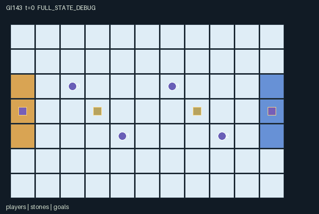

GI143 / SPATIAL
交叉冰道双人赛
角色通过推动、制动和重定向影响滑动物件，伙伴与对手都能改变后续路线。
Original saved demonstration
Recorded native state, often authored scripts or interventions; information scope and failures are preserved in the original provenance. This is a saved demonstration, not live browser play.

Release verification episode
Untrained uniform legal actions. Actual JAX state sampled along the full original episode; full-state debug camera. No human performance or learning claim.

Run this game
crucibles play --game 143
Start Python locally, then open the address printed by the terminal. Installation, multiplayer, takeover and keyboard controls →
Objective, rewards & ending
Exact task contract
{
"objective": "Two teams contest two neutral stones. Entering the right goal (x=10,y=2..4) scores team 0; entering the left goal (x=0,y=2..4) scores team 1, regardless of last pusher.",
"natural_termination": "Both stones have entered goals and become inactive. Horizon 72 truncates otherwise, with natural completion priority.",
"interaction": "Teammates and opponents can redirect or brake the same stone, cancel conflicting pushes, or occupy its future endpoint. These changes persist through bounded momentum and alter subsequent scoring opportunities.",
"observation_access": "All agent positions/energy, stone endpoints/directions/durations/activity, terrain, public event flags and team scores are public. Own role is one-hot. Goal centers are fixed landmarks; the actual goal mouth is the three terrain cells."
}Declared per-step reward bounds: -2.03 to 2.0. Observability: fully_observable.
Rules
- Two neutral stones start at (3,3) and (7,3). Right goal cells score team 0; left goal cells score team 1.
- Players move one cell. Other players old cells, current active stones and contested destinations block movement; swaps are rejected.
- A push costs two energy and targets the lowest-index adjacent active stone. Brake costs one energy. Wait recovers one energy, capped at four.
- Push vectors are summed. The strictly stronger absolute axis determines direction; an axis tie cancels motion. Same-axis opposite forces can cancel.
- Any brake on a stone overrides all pushes. Otherwise a push sets up to three one-cell movements including the current call.
- Stones move at most one cell per call. Boundaries, player endpoints, another active stone old cell or duplicate stone endpoints stop them.
- Contact costs the hit player one energy. A stone never passes through a player or another current stone cell.
- Friction removes one movement count per call. Direction becomes zero at rest. Goal entry removes that stone and emits a real score event.
- Each teammate receives own team goals minus other team goals; control actions also cost 0.01 per energy spent. Play ends after both stones score or at 72 calls.
Original mechanism document (historical status wording retained)
# Crosswake Ice Doubles — authored attempt_00 Status: AUTHORED_NOT_EXECUTED. A=4, O=125, U=10, H=72. No numerical simulation or candidate import was performed. ## Discrete world and control The 11x7 ice board has two neutral stones at (3,3) and (7,3). Agents 0 and 1 form team 0; agents 2 and 3 form team 1. The left goal is x=0,y=2..4 and credits team 1. The right goal is x=10,y=2..4 and credits team 0. Ownership does not follow the last pusher: a player can accidentally aid the other team. Actions 0..4 are Wait, North, East, South and West. Actions 5..8 push North, East, South and West; action 9 brakes. Every push/brake targets the lowest-index active stone at Manhattan distance exactly one. A player needs two energy to push or one to brake. Wait restores one energy up to four. Movement has no direct energy charge. Direction is a cardinal integer vector; speed is exactly zero or one cell per call. A successful nonzero push commands three movements including its current call. The stored momentum is the remaining future movement count after that call, so valid returned states have 0..2. No continuous physics or external physics engine is used. ## Explicit simultaneous resolution Player movement happens first. Attempts to enter another player's old cell, any currently active stone cell, or a duplicate proposed player destination fail. A stationary player therefore can block a stone without having to predict a swap-resolution convention. Player moves cannot follow a stone out of its old cell on the same call. All push vectors targeting a stone are added. If the horizontal absolute force is strictly larger than vertical, its sign becomes the direction; the analogous vertical case uses vertical. Ties between the two absolute axes cancel motion, including a zero total. Multiple same-direction pushes do not increase speed. Every pusher pays its two energy even if the command loses a conflict or produces a collision. Any valid Brake targeting that stone overrides all simultaneous pushes. Otherwise the resulting momentum advances the stone by one cell. A boundary, any player's resolved position, another active stone's old position, or a duplicate active-stone endpoint blocks motion and clears momentum. Both stone swaps and following another stone into its vacated cell are rejected. No projectile jumps over a player. A player contacted by an attempted moving endpoint receives a hit flag and loses one energy, capped below at zero; this is one loss for any contact on that call. Wait recovery and contact cost are combined. Friction decrements the movement count after the attempt. Zero remaining count produces zero velocity. A stone entering a real goal tile is removed from further interactions and sets scored_stone for that transition. ## Cross-agent choices and temporal effects A partner can brake a stone to preserve a future passing position, redirect it around a contested lane, or spend energy to reinforce a direction against an opponent. That partner's action changes the same physical object's next endpoints and the runner's feasible future approach. Opponents can place a player in a predicted endpoint, sacrifice energy to intercept, or push a neutral stone toward their own scoring side. Momentum persists when nobody touches the stone, so a useful response depends on what another player did earlier. Possible tactics include a direct launch with later pursuit, an energy-saving wait-and-intercept schedule, or a deliberate brake-and-redirect relay. Waiting restores resources but gives an untouched stone time to move; convergent pushes can waste two players' energy. These are prospective strategic tradeoffs, not measured best responses. ## Payoff, completion and conservation Each role gets newly scored own-team goals minus newly scored opposing-team goals, then loses 0.01 per energy spent pushing/braking. Thus one push costs 0.02 and one brake 0.01 in addition to their resource consumption. Contact affects energy, not a separate direct reward. Rewards lie inside [-2.03,2.0]. Both stones scoring naturally ends the episode; otherwise H=72 truncates. There are exactly two stones; scoring can only deactivate, never create or duplicate them. Scores plus active-stone count equal two from the reset. Active stone positions are unique, player positions are unique, and neither moving stone can end on a player. Energy stays in 0..4. Direction is zero/cardinal, movement budget is bounded, and scores never decrease. These statements require actual invariant checking later. ## Observations and actual scene The public observation tables contain all players, energies and hit flags; every stone's real endpoint, future direction, duration and activity; team scores, terrain and event flags. Own role identity is additionally one-hot. A direction marker must use the stored velocity, which becomes zero when the stone has just exhausted its motion budget. It must not continue an extrapolated trajectory after collision or stopping. The goal entity marks each mouth center only; the terrain explicitly identifies its full three-cell opening. Inactive scored stones are absent from further play, and the score event is the actual transition channel. Latest push/brake/collision/scored fields are per-step flags; momentum is a level and scores are cumulative. Three literal branch pairs isolate partner braking, partner redirection, and opponent interception after one common approach/push prefix. They contain no precomputed frames or claimed execution result. Later replay must inspect the real branch states. ## Future variations requiring new identities Changing goal-mouth positions, the command duration, energy recovery, collision rules, or team arrangement could alter relay and interception tactics. These are possible future source variations, not current adjustable parameters, implemented experiments, or claims of learned generalization. ## Literal source evidence - Shared target selection: candidate.py:84 contains exactly `target = jnp.min(jnp.where(nearby, jnp.arange(2)[None,:], 2), axis=1)`. - Actual simultaneous force sum: candidate.py:91 contains exactly `force = jnp.sum(push_dirs[actions][:,None,:] * (targeting & pushing[:,None])[:,:,None], axis=0)`. - Strict-axis priority: candidate.py:92 contains exactly `horizontal = jnp.abs(force[:,0]) > jnp.abs(force[:,1])`. - Brakes override push motion: candidate.py:98 contains exactly `momentum = jnp.where(braked, 0, momentum)`. - Actual next stone cell: candidate.py:100 contains exactly `endpoint = state["stone_pos"] + velocity * moving[:,None]`. - Spatial obstruction: candidate.py:109 contains exactly `collided = moving & (outside | player_block | old_stone_block | same_endpoint)`. - Friction and stopping: candidate.py:111 contains exactly `momentum = jnp.where(collided, 0, jnp.maximum(momentum - 1, 0)).astype(jnp.int32)`. - Persistent control resource: candidate.py:121 contains exactly `energy = jnp.clip(state["energy"] + (actions == 0).astype(jnp.int32) - spent - hit.astype(jnp.int32), 0, 4)`. - Team payoff coupling: candidate.py:139 contains exactly `reward = (scored - scored[::-1])[state["team"]].astype(jnp.float32) - spent.astype(jnp.float32) * 0.01`. - Raw terminal absorption: candidate.py:144 contains exactly `ns = jax.tree.map(lambda old, new: jnp.where(state["episode_done"], old, new), state, proposed)`. The line references above are static source evidence, not executed transition evidence. Method spans are reset=12-42, legal_actions=44-53, observe=55-69, advance=71-140, raw_step=142-148. ## Interface, provenance and remaining acceptance The native boundary is reset(key) -> (observation,state), observe(state), legal_actions(state), and raw_step(key,state,actions) -> (observation,state,reward,dones,info). All state leaves are fixed-shape int32/bool arrays; observations and rewards are float32. Signed sentinels use int32. The uint32 reset key belongs to external provenance and is not copied into state. Every valid nonterminal call increments t once. Natural termination has priority over a simultaneous horizon. Already-terminal calls preserve every state leaf and t, return the preserved observation and cause flags, zero reward, and all dones true. No raw auto-reset occurs. Invalid/out-of-range/masked actions deterministically become action 0. Action 0 remains legal for every role, including inactive or immobilized roles and terminal states. A later public JaxMARL adapter must map the listed agent names to ordered action/observation/reward/done dictionaries and expose done["__all__"]. It must preserve these observations, masks, rewards, raw terminal states, and inactive-role semantics. The author did not implement or validate that separate adapter, replace the frozen learner, or reuse old policy-bank weights. The declared A/O/U/H require matching integration and policy metadata. Only data schemas and source AST were inspected. Static checks do not establish JIT/vmap behavior, numerical parity, physical invariants under all actions, script legality, solvability, strategic richness, learned adaptation, transfer, or scientific acceptance. No real trajectories, animations, RGB frames, benchmark scores, training results or final-test data were read or generated. The scene is declarative binding data for a later real-state replay. Each source is attempt_00 and is frozen at its recorded SHA-256; a later repair requires separate actual feedback and dispatch. Community references were supplied as hash-bound read-only files. JaxMARL informs the future parallel agent-keyed interface; Pgx informs explicit legal masks and terminated/truncated separation; Craftax demonstrates persistent spatial game state and explicit reset handling. PureJaxRL and Craftax_Baselines_ppo_rnn.py are algorithm/integration references, not game libraries or replacements for the experimental learner. No upstream game rules or code were copied into this kernel, and no upstream benchmark implementation was read. The original rules here are attributable to GPT-6-Astra/max. - references\JaxMARL_README.md (https://github.com/bold-lab-ai/JaxMARL/blob/main/README.md), SHA-256 `6649d04f5ed05d620e78e8416a00d4db841cf2633ae60fdb3c9729e037a71c15`. - references\Pgx_README.md (https://github.com/sotetsuk/pgx/blob/main/README.md), SHA-256 `153f44999e55d5df3e51e13dee6ef418cc9704ddfa26206f1dc5789b9cbbf8df`. - references\PureJaxRL_README.md (https://github.com/luchris429/purejaxrl/blob/main/README.md), SHA-256 `d5f40182c924a42cec820931e61a7d5070e48c4c8413c7d16455abc6ea0ef6b0`. - references\Craftax_Baselines_ppo_rnn.py (https://github.com/MichaelTMatthews/Craftax_Baselines/blob/main/ppo_rnn.py), SHA-256 `5f93e6a7c3a1e0c551831d75be311735ba495dfdecae51787a1c03a27b1cd011`. - references\Craftax_README.md (https://github.com/MichaelTMatthews/Craftax/blob/main/README.md), SHA-256 `7f9757a2047143cf183f7e2e84851a740f386af80dbee050c89b316d66a3d3ff`.
Commands
Roles & abilities
agent_0 Team 0 west striker
agent_1 Team 0 redirecting partner
agent_2 Team 1 east striker
agent_3 Team 1 intercepting partner
Observation permissions
Training receives only the original observation rows. Role cameras use declared visibility; debug cameras are explicitly marked. Local benchmark records log debug exposure and role takeover history.
Exact observation layout
[
{
"slice": [
0,
20
],
"meaning": "Player-major 4 x [x/10,y/6,energy/4,team,last-step hit], player order 0..3.",
"visibility": "public"
},
{
"slice": [
20,
32
],
"meaning": "Stone-major 2 x [x/10,y/6,dx,dy,momentum/3,active]. Direction components lie in -1..1.",
"visibility": "public"
},
{
"slice": [
32,
34
],
"meaning": "Team 0 and 1 cumulative goal counts divided by two.",
"visibility": "public"
},
{
"slice": [
34,
38
],
"meaning": "One-hot observing player identity.",
"visibility": "self"
},
{
"slice": [
38,
39
],
"meaning": "Elapsed calls t/72.",
"visibility": "public"
},
{
"slice": [
39,
40
],
"meaning": "Joint episode_done.",
"visibility": "public"
},
{
"slice": [
40,
117
],
"meaning": "Public 7x11 terrain in y-major order, values divided by two: ice 0, left goal 0.5, right goal 1.",
"visibility": "public"
},
{
"slice": [
117,
119
],
"meaning": "Latest stone push-command flags.",
"visibility": "public"
},
{
"slice": [
119,
121
],
"meaning": "Latest stone brake-command flags.",
"visibility": "public"
},
{
"slice": [
121,
123
],
"meaning": "Latest newly scored-stone flags.",
"visibility": "public"
},
{
"slice": [
123,
125
],
"meaning": "Latest attempted-motion collision flags.",
"visibility": "public"
}
]Entity visibility & attributes
[
{
"id": "players",
"kind": "agent",
"count": 4,
"position": [
"agent_pos"
],
"active": [
"agent_active"
],
"visibility": [
"agent_visible"
],
"attributes": [
{
"state_path": [
"team"
],
"meaning": "Team identity: 0 or 1",
"display": "category"
},
{
"state_path": [
"energy"
],
"meaning": "Available control energy, 0 to 4",
"display": "bar"
},
{
"state_path": [
"hit"
],
"meaning": "Stone contacted this player on the last transition",
"display": "flag"
}
]
},
{
"id": "stones",
"kind": "object",
"count": 2,
"position": [
"stone_pos"
],
"active": [
"stone_active"
],
"visibility": [
"stone_visible"
],
"attributes": [
{
"state_path": [
"velocity"
],
"meaning": "Next-motion direction [dx,dy], zero when stopped",
"display": "direction"
},
{
"state_path": [
"momentum"
],
"meaning": "Future one-cell motion calls remaining, 0 to 2 after a step",
"display": "number"
}
]
},
{
"id": "goals",
"kind": "landmark",
"count": 2,
"position": [
"goal_pos"
],
"active": [
"goal_active"
],
"visibility": [
"goal_visible"
],
"attributes": [
{
"state_path": [
"goal_team"
],
"meaning": "Team credited by this goal",
"display": "category"
}
]
}
]Actual verification & provenance
Per-game execution receipt
{
"game": "gi143",
"status": "PASS",
"verification_revision": 2,
"source_sha256": "a9e23750216fa0e669c68ed604257fe7fdfd19471f184f14724da6ba2d4de6c6",
"seed": 20261101,
"runtime": {
"jax": "0.4.38",
"numpy": "1.26.4",
"devices": [
"TFRT_CPU_0"
]
},
"dimensions": {
"num_agents": 4,
"observation_size": 125,
"num_actions": 10,
"max_steps": 72
},
"checks": {
"eager_reset": {
"status": "PASS",
"seconds": 0.9933204650878906
},
"observation_spaces_legal_masks": {
"status": "PASS",
"seconds": 0.5536050796508789
},
"eager_step": {
"status": "PASS",
"seconds": 2.657961130142212
},
"jit_reset": {
"status": "PASS",
"seconds": 0.06495165824890137
},
"jit_step": {
"status": "PASS",
"seconds": 0.4051535129547119
},
"eager_jit_integer_parity_float_measurement": {
"status": "PASS",
"seconds": 0.0
},
"jit_vmap_reset": {
"status": "PASS",
"seconds": 0.12316155433654785
},
"jit_vmap_step": {
"status": "PASS",
"seconds": 0.5656487941741943
},
"outer_autoreset_api": {
"status": "PASS",
"seconds": 0.545050859451294
},
"full_original_horizon_episode_and_render": {
"status": "PASS",
"seconds": 0.8661277294158936
}
},
"human_scores": null,
"browser_controls": "PENDING",
"failures": [],
"elapsed_seconds": 7.285816192626953,
"float_parity_max_abs": 5.960464477539063e-08,
"numerical_parity": "UNDETERMINED_NONZERO_FLOAT_DIFFERENCE",
"raw_terminal_absorbing": "PASS",
"terminal_outer_reset": "PASS",
"episode_steps": 72,
"scripted_random_returns": [
0.9800000004470348,
0.9600000195205212,
-1.0299999993294477,
-1.0899999979883432
],
"terminal": true,
"demo_information": "FULL_STATE_DEBUG",
"demo_frames": 25,
"render_roles_checked": 4
}Chromium control verification
{
"game": "gi143",
"status": "PASS",
"human_scores": null,
"engineering": true,
"checks": [
"catalog_selected_and_real_native_reset",
"keyboard_native_direction_command",
"dom_queue_and_native_step",
"second_participant_ownership_and_native_joint_step",
"all_roles_individually_controllable_no_role_cap",
"explicit_debug_camera",
"release_to_pure_ai_without_reset",
"close_session_preserves_log"
],
"ui_sha256": "96243f9de144b80b5e20a114330e2206bdcd58d3efc9c6f13bbc08b95cacc14d",
"keyboard_action_id": 1,
"seconds": 4.920510292053223
}Original identity and file hashes
{
"id": 143,
"key": "gi143",
"title": "交叉冰道双人赛",
"summary": "角色通过推动、制动和重定向影响滑动物件，伙伴与对手都能改变后续路线。",
"tags": [
"滑行动力",
"团队配合"
],
"family": "spatial",
"dimensions": {
"num_agents": 4,
"observation_size": 125,
"num_actions": 10,
"max_steps": 72
},
"source_sha256": "a9e23750216fa0e669c68ed604257fe7fdfd19471f184f14724da6ba2d4de6c6",
"manifest_sha256": "76b0dfc14f67921382eba5666316e8a132f64335f0135a1d874aa2aa3d9381ed",
"files": [
{
"file": "candidate.py",
"sha256": "a9e23750216fa0e669c68ed604257fe7fdfd19471f184f14724da6ba2d4de6c6",
"bytes": 9166,
"origin": "work/exp_2/game_incubator_v3/community_games222_225_visualization_root222_v1/native154_candidate/registry/v2/games/game-v3-00143/candidate.py"
},
{
"file": "manifest.json",
"sha256": "76b0dfc14f67921382eba5666316e8a132f64335f0135a1d874aa2aa3d9381ed",
"bytes": 11980,
"origin": "work/exp_2/game_incubator_v3/community_games222_225_visualization_root222_v1/native154_candidate/registry/v2/games/game-v3-00143/manifest.json"
},
{
"file": "scene.json",
"sha256": "936f571bb474daa20504f00c2a0b9022880b88582bb46e55357f949469160bb2",
"bytes": 7256,
"origin": "work/exp_2/game_incubator_v3/community_games222_225_visualization_root222_v1/native154_candidate/registry/v2/games/game-v3-00143/scene.json"
},
{
"file": "mechanism.md",
"sha256": "2daeac06fa614713e12ac7abb7f1859dc42e82955bbaf1e58a42e6e6a7ee37e5",
"bytes": 10936,
"origin": "work/exp_2/game_incubator_v3/sources/game-v3-00143/attempt_00/mechanism.md"
},
{
"file": "playthrough.json",
"sha256": "2717d5a4b8c42a4bf241d6b04fdde82c68fb65b8111008ed3494a3a8b955b982",
"bytes": 4966,
"origin": "work/exp_2/game_incubator_v3/sources/game-v3-00143/attempt_00/playthrough.json"
}
],
"original_status": "NATIVE154_REFERENCE",
"original_saved_replay": true,
"release_validation": "PASS",
"human_scores": null,
"browser_validation": "PASS"
}